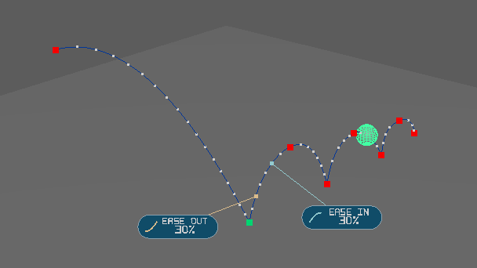

See the whole arc
Select a keyed control and add its trail. Key markers show your poses. Smaller dots show the frames between them. Orbit the camera to check depth from another angle.
Grab a key in the viewport. Shape the arc with its tangents. Adjust how the frames gather into a landing or spread out of a takeoff.

Select a keyed control and add its trail. Key markers show your poses. Smaller dots show the frames between them. Orbit the camera to check depth from another angle.
Drag a key in screen space. Switch on World Space to pull a single axis or drag an XY, XZ or YZ plane square. The same controls work on tangent handles.
Use Auto for a smooth pass through a key, Broken for an abrupt change of direction, or Weighted to pull one handle longer. End keys give you a handle on the side with animation.
Select the takeoff key and enable Ease In / Out. Drag the outgoing and incoming viewport grips, or use the panel sliders. The native tangents remain editable in the Graph Editor. Independent XYZ time weights can slightly change the arc.
Shift Left moves earlier keys one frame back. Shift Right moves later keys one frame forward. The key under the playhead stays pinned. Transform, visibility, shape and custom attribute keys travel together, including keys beyond the visible range.
Keep using Set Key, Auto Key, and the Graph Editor. Start from the keys you authored and undo a completed trail drag in one step.
Change the colors of arcs, frame dots, keyframes, tangent handles, Ease grips and axes. Hide the Ease overlay when you want a clear view. Your palette carries across sessions.
Refresh from the timeline or set start, end and sample step in the panel. A key shift expands the displayed range when needed. Undo restores the timing and range together.
Each year has its own Windows ZIP. Extract the matching package, then drag install_shelf.py into a Maya viewport to add the Diamond Key shelf button.
Start with a transform with directly keyed translation channels. A constraint or animation-layer network driving translation can prevent the trail from opening.
The trail displays the world-space motion from your existing animation. Dragging its keys and tangents edits the underlying animation curves.
All eligible timeline keys on the active object and its shapes on the chosen side of the playhead move by one frame. Locked or shared channels can block the edit.